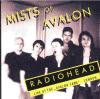

Mists of Avalon

CDX 1596402 MPH - MEGAP 002
Tracks from Glastonbury 28/Jun/97
<1> Planet Telex
<2> Exit Music (for a film)
<3> The Bends
<4> Nice Dream
<5> Paranoid Android (listed as "Paranoid Andoid")
<6> Karma Police
<7> Creep
<8> Climbing up the Walls
<9> No Surprises
<10> Talk Show Host (listed as "Talkshow Hosts")
<11> Bones
<12> Just
<13> Fake Plastic Trees (listed as "Fake Plastic Tree")
<14> High & Dry
<15> Street Spirit [Fade Out]
Type of recording : Radio Broadcast
Quality : Very Good
Notes : Listed as "Recorded live at the 'Avalon Farm', London, 27/Jun/97", when it is
clearly the Glastonbury recording. Quality of track 13 is terrible, but the
rest are good.
Rating : ****